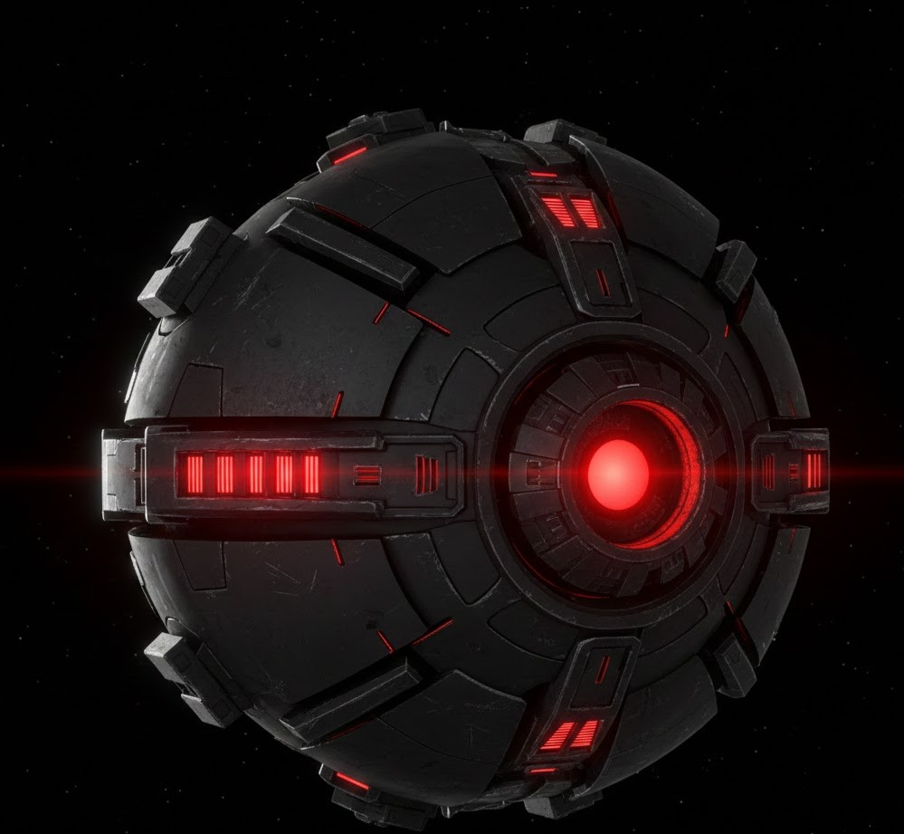

Recentemente eu inventei uma nave com o laser mais potente que o do spaceracer. um laser que pode derrotar os seres intergalacticos: viltromitas. ela foi criada por humanos do futuro no ano 3345, futuro esse que não existia viltromitas e outros seres malignos. porque os humanos eram poderosos demais dentro dessa nave
Não; Os humanos deixaram a nave com um metal muito resistente e não quebra com nada porque os humanos pegaram compostos de meteoros e colocaram na nave.
Sim porque eles não tem mais oque se preocupar. mas eles estão enfrentando desastres catastróficos com monstros cosmicos.
Bem futurista com ovnis bola como carro de hoje mas no futuro e os predios são muito minimalista com uns aneis circulares.